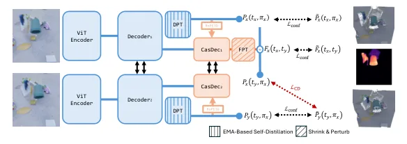
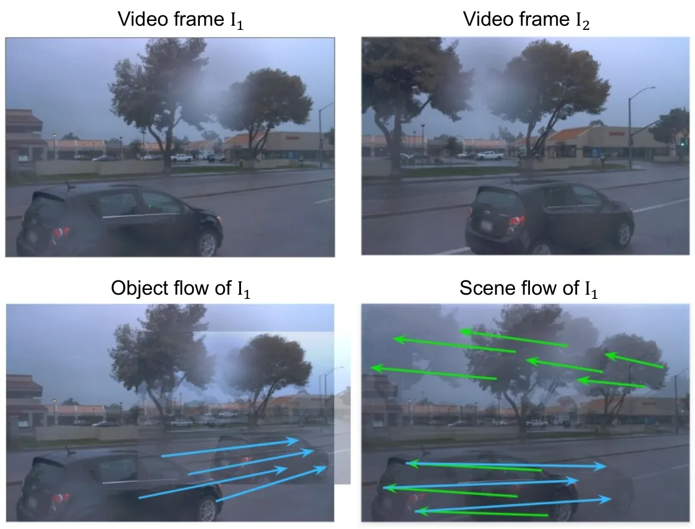
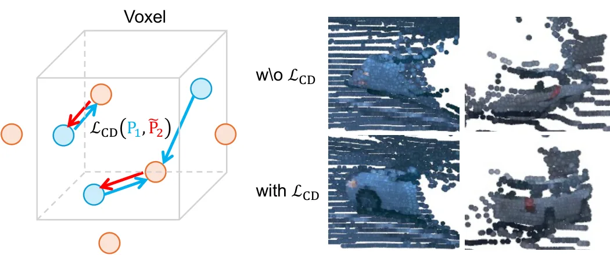
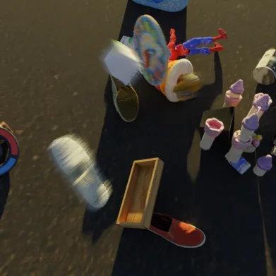
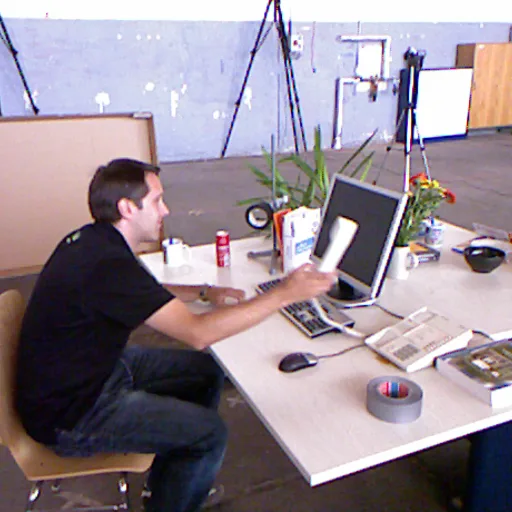
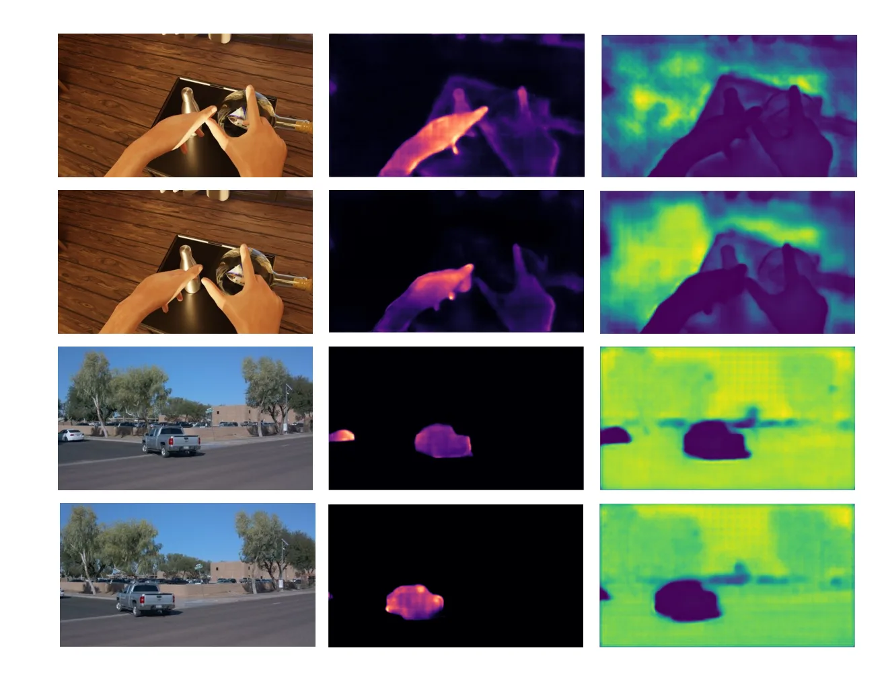

SM4RT：先重建几何、再估运动的级联前馈 4D 模型
SM4RT: Cascaded Feed-forward Model for 4D Reconstruction
SM4RT 以 DUSt3R 为骨干：输入两帧，先出 point map（几何），再把预测的三维位置通过 3D RoPE 注入运动解码器的注意力，输出“物体流”（object flow）——即忽略相机运动、在各自相机坐标系里表达的逐像素三维位移，静态点因此天然为零运动；总损失是带置信度的全监督回归项加一个弱监督 Chamfer 项（用另一时刻的带标注点位置约束未标注点）。Kubric-F 上物体流 EPE 0.018/0.017，MonST3R 0.050/0.049、DPM 0.033/0.029；Waymo 上 0.014 对 0.020；相对位姿旋转误差 0.193 对 DynaDUSt3R 3.507；深度在 Kubric 上 AbsRel 0.044、δ<1.25 0.963（MonST3R 0.166/0.779），但 Sintel 上 0.367 反而差于 MonST3R 的 0.347。
object flow EPE
object flow EPE on Waymo
relative pose rotation error
depth on Kubric
作者、单位与技术谱系 · Research context
作者与单位
研究脉络
- DUSt3R（2024）方法基座关系：提供两视图点图与相对位姿的前馈骨干，SM4RT 直接在其上接运动解码器。[论文 §2.1 与 §3.1]
- DPM / DynaDUSt3R（2025）对比基线关系：把 DUSt3R 扩到动态点图与物体流，但仍在第一帧相机系里表达运动；SM4RT 用各自相机系消除这一歧义。[论文 §2.2 与 §4.1]
- MonST3R（2024）对比基线关系：用光流关联像素再相减得到物体流，是“直接扩 DUSt3R”的另一条路线。[论文 §4.1 与表 1]
合作网络
- CMU–NTU 合作Carnegie Mellon University → National Taiwan University关系：论文共同署名[论文 TeX 作者块]
- SM4RT 与 DUSt3RSM4RT → DUSt3R关系：骨干架构依赖[论文 §3.1]
- 项目页与作者团队SM4RT → sm4rt-eailab.github.io关系：官方项目页[SM4RT 项目页]
作者与单位来自 TeX 源；谱系条目依据论文自述与引用；未发现公开材料说明作者之间的指导关系，故不写。
方法本质拆解 · What actually changed
端到端训练，几何与运动共享骨干
以 DUSt3R 预训练权重为起点，几何分支与运动分支一起训练 200 epoch，四张 ADA 6000 约 40 小时；没有冻结几何分支，也没有分阶段先训几何再训运动。弱监督 Chamfer 项与全监督回归项同时优化，因此几何与运动是联合学习的。
约束是相机系表达与静态点零运动
把运动定义在各自相机坐标系里，等于强制去掉相机运动分量，静态点因此天然为零位移；这是一个表示层约束，不是 loss 项。3D RoPE 把预测的三维位置编码进注意力，等于给运动估计加了“几何条件”；Chamfer 项则把标注点的位置当作弱约束传播到未标注像素。
两次前向，无优化后端
推理是纯前馈：先跑几何得到点图与相对位姿，再跑运动解码器得到物体流，必要时交换输入顺序得到反向流；没有全局 BA、没有测试时优化。位姿由静态点的 PnP/Procrustes 解出，因此位姿精度取决于几何分支的静态点质量。
用表示解耦代替联合建模
方法没有显式建模相机运动与物体运动的联合分布，而是通过坐标系的选取把相机运动从运动标签里剔除，让网络只学物体自身位移；再让几何分支提供三维条件，使运动估计有可靠的参照。它没有做的是多帧联合、也没有处理遮挡导致的轨迹断裂，长序列仍要靠滑窗。
输入 = 两帧 RGB；改变的位置 = 在 DUSt3R 几何分支后接运动解码器，并用 3D RoPE 注入几何；约束/动作 = 相机系物体流 + 弱监督 Chamfer；直接效果 = Kubric 物体流 EPE 0.018、Waymo 0.014，位姿旋转误差 0.193。

结论与问题Conclusion & Motivation
核心结论
把 4D 重建拆成“先几何、后运动”的级联，并把运动定义成各自相机坐标系里的物体流，可以让静态点天然零运动、相机运动不再混进运动标签，从而同时改善运动估计与相对位姿。Kubric-F 上物体流 EPE 0.018/0.017，MonST3R 0.050/0.049、DPM 0.033/0.029；Waymo 上 0.014 对 0.020；相对位姿旋转误差 0.193，DynaDUSt3R 为 3.507。几何侧没有明显退步：Kubric 深度 AbsRel 0.044、δ<1.25 0.963，远好于 MonST3R 的 0.166/0.779，但 Sintel 上 0.367 略差于 0.347，说明收益并非全数据集一致。
动机与问题
动态场景里几何与运动强耦合：准确运动需要每帧可靠的三维点，几何重建又依赖跨视角对应，而动态物体会破坏静态多视图假设。现有前馈方法把未来/过去的点图都表达在第一帧相机系里，模型必须隐式推断相对位姿才能得到运动，歧义大；同时真实数据的运动标注极稀疏，只有三维框覆盖的像素有标签。作者因此选择两个切口：一是把运动定义在各自相机系里（物体流），二是用弱监督把有标注点的位置信息传播到未标注点。
方法Method
方法总览
几何阶段沿用 DUSt3R：两帧输入，输出各自的 point map 与相对位姿。运动阶段是一个 transformer 解码器加 DPT 头，输入几何阶段的三维点位置（经 3D RoPE 编码）与图像特征，输出逐像素的三维位移，即物体流。训练目标由两部分组成：基于真值动态点图与物体流的置信度回归损失，以及弱监督 Chamfer 损失，后者把未标注点的预测位置拉向其对应时刻的带标注点云。推理时把物体流加到第一帧点图上就得到第二帧点图，位姿可由静态点几何用 PnP/Procrustes 解出。
关键技术细节
物体流的定义是 P₁(t₂,π₁) − P₁(t₁,π₁)：忽略相机运动，只保留物体自身位移，因此静态点恒为零。3D RoPE 把预测出的三维坐标编码成位置嵌入注入注意力，使运动解码器能“看到”几何；消融显示去掉它会让 L_rel 从 0.075 升到 0.147。弱监督 Chamfer 项解决标注稀疏：即使某像素没有运动标签，只要它在另一时刻落在有标注的点云附近，就能获得梯度。训练用 200 epoch、初始学习率 5e-5、四张 NVIDIA ADA 6000 约 40 小时，输入分辨率在 512×288 到 512×512 间随机采样。

实验Experiments
实验设置
训练混合静态（WildRGBD、BlendedMVS）与动态（Waymo、Kubric-F、Spring、Point Odyssey）数据；运动评测在 Waymo（1000 对相邻帧）、Kubric-F（1000 对，来自 1470 个测试场景）与 Point Odyssey（1000 对，来自 109 个未见视频段），指标为物体流 EPE、点图相对误差 L_rel 与相对位姿误差。几何评测在 Sintel、Point Odyssey、Bonn、Kubric、KITTI 五个数据集上，用两视图深度的 AbsRel 与 δ<1.25 作代理指标。基线是 MonST3R、DPM、DynaDUSt3R；对比时把基线的第二帧预测用真值相对位姿变换到其自身相机系，以保证表示一致。
实验数字与比较
表 1：Kubric-F 物体流 EPE 0.018（前向）/0.017（后向），MonST3R 0.050/0.049，DPM 0.033/0.029；相对位姿旋转 0.193、平移 0.085，DynaDUSt3R 3.507/0.357。Waymo 物体流 EPE 0.014 对 DPM 0.020，点图 L_rel 0.068（I₁）对 MonST3R 0.170。表 2 深度：Kubric 上 AbsRel 0.044、δ<1.25 0.963，MonST3R 0.166/0.779、DPM 0.078/0.950；但 Sintel 上 0.367/0.482，差于 MonST3R 0.347/0.573 与 DPM 0.321/0.564；KITTI 上 0.089/0.951 也略差于 DPM 0.052/0.968。
消融/失败边界
表 3 在 Waymo 上做组件消融：去掉弱监督 Chamfer 损失，I₁/I₂ 点图的 L_rel 从 0.075 升到 0.151，物体流 EPE 分别增加 0.032 与 0.030；去掉 3D RoPE（改用二维像素坐标做位置编码），两个点图的 L_rel 变为 0.147 与 0.146，EPE 分别增加 0.033 与 0.031。两个结果说明“几何引导运动”和“弱监督补标注”都是必要条件，而不是训练技巧。失败边界在 Sintel 上最明显：几何指标反而低于更早的 DPM/MonST3R，作者解释为级联设计对强运动与薄结构场景不占优；此外所有运动标签来自三维框或模拟器轨迹，遮挡与小物体的标签本身有噪声。
局限与迁移Limitations & Transfer
局限与待核验
作者明确说这是两帧模型，长视频需要滑窗或多次推理，误差会累积；评测主要在合成（Kubric）与自动驾驶（Waymo/KITTI）数据上，室内手持与 Egocentric 场景只给了 TUM RGB-D 的定性例子。我们要核验的是：物体流在相机自身系表达后，跨帧拼接时如何处理尺度与坐标变换，正文只给单对帧公式；Chamfer 弱监督的 voxel 化阈值会直接影响未标注点的梯度强度，附录给了实现但没给敏感性分析；Sintel 上的退化是否意味着对大幅度非刚性形变不适用，需要按运动幅度分层统计；代码与权重的实际可用性（项目页已给出，但正文未说明许可证）。
与你研究路线的关系
“几何先行、运动后估”的级联对我们做动态场景下的状态估计很实用：先用静态结构把相机运动解出来，再单独估动态物体，可以避免把运动物体的残差塞进位姿优化。物体流的表示也值得借用——把静态点的运动强制为零，相当于一个免费的动态掩码，可用于我们做动态 SLAM 时的外点剔除。可迁移模块包括 3D RoPE 注入（让运动网络直接吃几何）与 Chamfer 弱监督（在只有部分标注的真实数据上补齐监督）。下一步可以拿我们的车载序列，用现成的 DUSt3R/VGGT 几何 + 本文思路估物体流，比较“先位姿后运动”与联合优化在动态物体附近的 ATE 差异，并测静态点零运动约束对动态掩码精度的影响。







